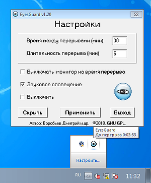
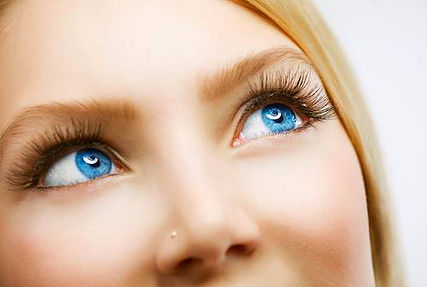

|
If you work a lot on a computer and want to keep your vision in order or to keep vision of your children and relatives, who are crazy of PC, this program will be very useful for you! |
EyesGuard will remind you about necessity to have a break during a long work on computer. This program places an icon into the system tray and does not disturb your work. It allows to adjust the time between breaks (work time), breaks duration (break time) and has some more functions: sound effects, turning your monitor off during the break.Try to use this program and then EyesGuard will guard your vision! |
About EyesGuard
EyesGuard helps you to keep vision in order
|
This program helps you to organize your work on a computer properly. It reminds about necessity to have a break during long work and informs about the start and the end of the break. After starting EyesGuard places an icon with an eye into the system tray near system clock. If the eye is blue the program works, if it is orange the program does not work (and so your eyes can become orange too! ;) ). Main menu of EyesGuard opens by clicking right button of mouse on the EG`s icon in system tray. All settings are made at the window "Settings", which can be opened this way: Main menu -> Settings or by clicking left button on the icon. EyesGuard does not demand an installation and does not insert any records into the register of your operational system. Read more about EyesGuard |

|
Oculist's recommendations
|

|
The time of continuous work on a computer should not exceed 45 minutes. Optimal working time is 30 minutes or less. For children that time should not exceed 15 minutes. Break duration should be from 5 to 15 minutes, depending on the working time. However you can change this settings as you want. During the break it is recommended to do some exercises for eye's relaxation. And the main thing: never forget about your health!!! |
Download EyesGuard
EyesGuard is distributed under the GNU General Public License. The official publication of the license GNU GPL you can find here: http://www.gnu.org/licenses/gpl.html
Last version of EyesGuard you can download from here.
Source code and previous versions are also available at GitHub.
EyesGuard was written using the IDE Borland C++ Builder 6.
There were used some icons for noncommercial usage from sites www.aha-soft.com and www.deleket.com. Thanks to their authors!
For Linux users: if you want ro run EyesGuard under Linux you should use
WINE. After wine is installed run this command:
$wine "[path_to_file]\EyesGuard.exe"
Contacts
Your opinions, wishes and observations you may send by e-mail:
eyesguard@yandex.ru
Also you can join to EyesGuard project!